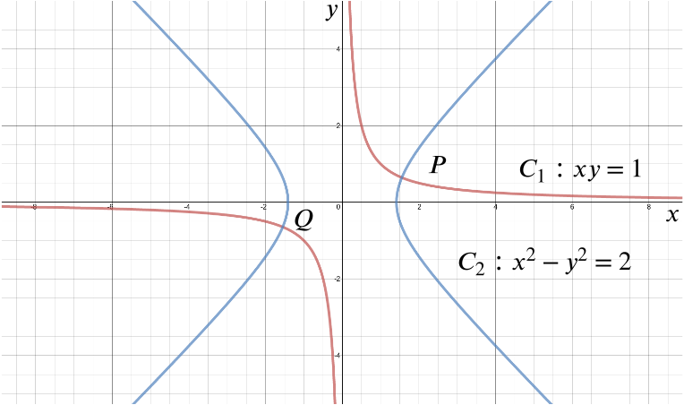
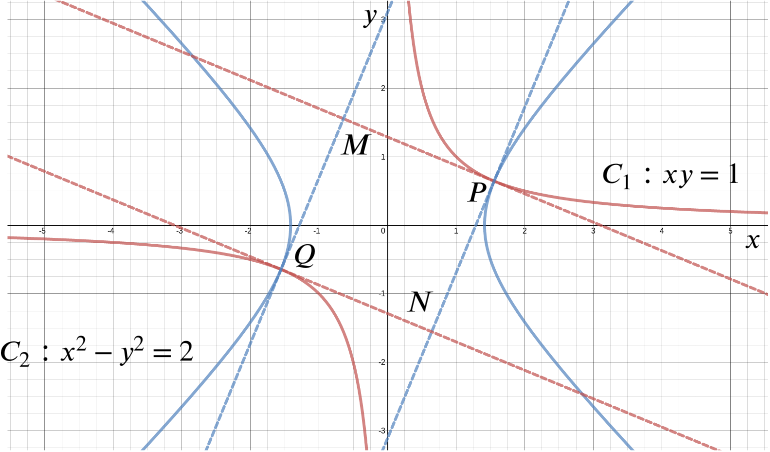

Sketch on the same axes the two curves C1 and C2, given by
C1C2:xy:x2−y2=1,=2.

Note that C2 does not intersect the y-axis.
The curves intersect at P and Q. Given that the coordinates of P are (a,b) (which you need not evaluate), write down the coordinates of Q in terms of a and b.
If P has coordinates (a,b), then Q has coordinates (−a,−b).
This is easily checked by substituting back into the equations for C1 and C2.
The tangent to C1 through P meets the tangent to C2 through Q at the point M, and the tangent to C2 through P meets the tangent to C1 through Q at N. Show that the coordinates of M are (−b,a) and write down the coordinates of N.

The gradient of C1 at any point is given by:
y+xdydx=0⟹dydx=−yx.
Similarly, the gradient of C2 at any point is given by
2x−2ydydx=0⟹dydx=xy.
Thus the tangent to C1 at P(a,b) has equation
y−b=−ba(x−a),
while the tangent to C2 at Q(−a,−b) has equation
y+b=ab(x+a).
The intersection of these two lines is at M, so we solve the equations simultaneously to find the coordinates of M.
In the process of doing this, we need to use the information that (a,b) are the coordinates of point P, that is, (a,b) lies on both C1 and C2. So we should expect to use the equations
aba2−b2=1=2
at some point.
We want to solve
abx+a2−b2b=−bax+2b.
Multiplying through by ab, we can eliminate denominators, and since ab=1 we do not need to change the last term. We can also replace a2−b2 by 2. We get
a2x+2a=−b2x+2b,
so
(a2+b2)x=2(b−a).
We want to deal with a2+b2. We could try to write it in terms of b−a, since that’s on the right-hand side.
We have
a2+b2=(a−b)2+2ab=(a−b)2+2,
so the above equation becomes
[(a−b)2+2]x=2(b−a).
We can divide through by a−b (it cannot be zero because a2−b2=2), and use a2−b2=2 to give 2a−b=a+b, using the familiar difference of two squares.
Thus the equation becomes
((a−b)+2a−b)x=−2,
that is,
(a−b+a+b)x=−2.
Now we can tidy up to get
x=−1a=−b,
and using either of the equations of the tangents, say the first one, then gives
y=b2a+2b=b2+2aba=b2+2a=a.
So M has coordinates (−b,a), as required.
Then we see immediately that N has the coordinates (b,−a).
Show that PMQN is square.
Consider the two tangents through point P:
y−by−b=−ba(x−a)=ab(x−a),
and note that
−ba×ab=−1.
The tangent of C2 at P is therefore also the normal of C1 at P. By an analogous argument around PMQN all intersecting straight lines meet at right angles.
All we then need to do is show that one of the side lengths is equal to any one of the others, and indeed we have